Jacob Dunefsky∗ Yale University New Haven, CT 06511 jacob.dunefsky@yale.edu
Philippe Chlenski∗ Columbia University New York, NY 10027 pac@cs.columbia.edu
Neel Nanda
Abstract
A key goal in mechanistic interpretability is circuit analysis: finding sparse subgraphs of models corresponding to specific behaviors or capabilities. However, MLP sublayers make fine-grained circuit analysis on transformer-based language models difficult. In particular, interpretable features—such as those found by sparse autoencoders (SAEs)—are typically linear combinations of extremely many neurons, each with its own nonlinearity to account for. Circuit analysis in this setting thus either yields intractably large circuits or fails to disentangle local and global behavior. To address this we explore transcoders , which seek to faithfully approximate a densely activating MLP layer with a wider, sparsely-activating MLP layer. We introduce a novel method for using transcoders to perform weights-based circuit analysis through MLP sublayers. The resulting circuits neatly factorize into input-dependent and input-invariant terms. We then successfully train transcoders on language models with 120M, 410M, and 1.4B parameters, and find them to perform at least on par with SAEs in terms of sparsity, faithfulness, and humaninterpretability. Finally, we apply transcoders to reverse-engineer unknown circuits in the model, and we obtain novel insights regarding the “greater-than circuit” in GPT2-small. Our results suggest that transcoders can prove effective in decomposing model computations involving MLPs into interpretable circuits. Code is available at https://github.com/jacobdunefsky/transcoder_circuits/ .
1 Introduction
In recent years, transformer-based large language models (LLMs) have displayed outstanding performance on a wide variety of tasks [8, 43, 46]. However, the mechanisms by which LLMs perform these tasks are opaque by default [10, 33]. The field of mechanistic interpretablity [9] seeks to understand these mechanisms, and doing so relies on decomposing a model into circuits [41]: interpretable subcomputations responsible for specific model behaviors [15, 32, 42, 50].
A core problem in fine-grained circuit analysis is incorporating MLP sublayers [32, 38]. Attempting to analyze MLP neurons directly suffers from “polysemanticity” [3, 16, 24, 40]: the tendency of neurons to activate on many unrelated concepts. To address this, sparse autoencoders (SAEs) [7, 12, 51] have been used to perform fine-grained circuit analysis by instead looking at features —vectors in the model’s representation space—instead of individual neurons [14, 34]. However, while SAE features are often interpretable, these vectors tend to be dense linear combinations of many neurons [36]. Thus, mechanistically understanding how an SAE feature before one or more MLP layers affects a later SAE feature may require considering an infeasible number of neurons and their nonlinearities. Prior attempts to circumvent this [14, 34] use a mix of causal interventions and gradient-based
∗ Equal contribution.
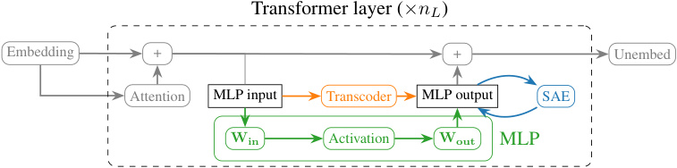
Transformer layer ( ×nL )
Embedding + + Unembed
Attention MLP input Transcoder MLP output SAE
Win Activation Wout MLP
Figure 1: A comparison between SAEs , MLP transcoders , and MLP sublayers for a transformerbased language model. SAEs learn to reconstruct model activations, whereas transcoders imitate sublayers’ input-output behavior.
approximations to MLP layers. But these approaches fail to exhibit input-invariance : the connections between features can only ever be described for a given input , and not for the model as a whole. Attempts to address this, e.g. by averaging results over many inputs, conversely lose their ability to yield input-dependent information that describes a connection’s importance on a single input. This means that SAEs cannot tell us about the general input-output behavior of an MLP across all inputs .
To address why input-invariance is desirable, consider the following example: say that one has a post-MLP SAE feature and wants to see how it is computed from pre-MLP SAE features. Doing e.g. patching on one input shows that a pre-MLP feature for Polish last names is important for causing the post-MLP feature to activate. But on other inputs, would features other than the Polish last name feature also cause the post-MLP feature to fire (e.g. an English last names feature)? Could there be other inputs where the Polish last names feature fires but the post-MLP feature does not? We can see that without input-invariance, it is difficult to make general claims about model behavior.
Motivated by this, in this work, we explore transcoders (an idea proposed, but not explored, in Templeton et al. [47] and Li et al. [31]): wide, sparsely-activating approximations of a model’s original MLP sublayer. Specifically, MLP transcoders are wide ReLU MLPs with one hidden layer that are trained to faithfully approximate the original narrower MLP sublayer’s output, with an L1 regularization penalty on neuron activations to encourage sparse activations. Our primary motivation is to enable input-invariant feature-level circuit analysis through MLP sublayers, which allows us to understand and interpret the general behavior of circuits involving MLP sublayers.
Our contributions. Our main contributions are (1) to introduce a method for circuit analysis using transcoders, (2) to confirm that transcoders are a faithful and interpretable approximation to MLP sublayers, and (3) to demonstrate the utility of our circuit analysis method on detailed case studies.
After describing the architecture of transcoders in §3.1, we demonstrate in §3.2 that transcoders additionally enable circuit-finding techniques that are not possible using SAEs, and introduce a novel method for performing circuit analysis with transcoders and demonstrate that transcoders cleanly factorize circuits into input-invariant and input-dependent components.
Then, in §4, we evaluate transcoders’ interpretability, sparsity, and faithfulness to the original model. Because SAEs are the standard method for finding sparse decompositions of model activations, we compare transcoders to SAEs on models up to 1.4 billion parameters and verify that transcoders are on par with SAEs or better with respect to these properties.
We apply transcoder circuit analysis to a variety of tasks in §5.1 and §5.2, including “blind case studies,” which demonstrate how this approach allows us to understand features without looking at specific examples, and an in-depth analysis of the GPT2-small “greater-than circuit” previously studied by Hanna et al. [26].
2 Transformers preliminaries
Following Elhage et al. [15], we represent the computation of a transformer model as follows. First, the model maps input tokens (and their positions) to embeddings x( pre0,t)_∈_R_d_model, where_t_is the token index and d model is the model dimensionality . Then, the model applies a series of “layers,” which map the hidden state at the end of the previous block to the new hidden state. This can be expressed as:
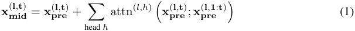
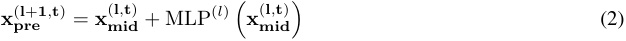
where l is the layer index, t is the token index, attn(l,h) ( x( prel,t);x( prel,1:t) ) denotes the output of attention head h at layer l given all preceding source tokens x( prel,1:t) and destination token x( prel,t), and MLP(l) ( x( midl,t)) denotes the output of the layer_l_MLP.2
Equation 1 shows how the attention sublayer updates the hidden state at token t , and Equation 2 shows how the MLP sublayer updates the hidden state. Importantly, each sublayer always adds its output to the current hidden state. As such, the hidden state always can be additively decomposed into the outputs of all previous sublayers. This motivates Elhage et al. [15] to refer to each token’s hidden state as its residual stream , which is “read from” and “written to” by each sublayer.
3 Transcoders
3.1 Architecture and training
Transcoders aim to learn a “sparsified” approximation of an MLP sublayer: they approximate the output of an MLP sublayer as a sparse linear combination of feature vectors. Formally, the transcoder architecture can be expressed as
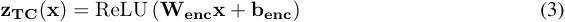
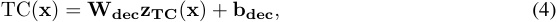
where x is the input to the MLP sublayer, Wenc ∈ Rd_features×d_model , Wdec ∈ Rd_model×d_features , benc ∈ R_d_features , bdec ∈ R_d_model , d features is the number of feature vectors in the transcoder, and d model is the dimensionality of the MLP input activations. Usually, d features is far greater than d model.
Each feature in a transcoder is associated with two vectors: the i -th row of Wenc is the encoder feature vector of feature i , and the i -th column of Wdec is the decoder feature vector of feature i . The i -th component of zTC ( x ) is called the activation of feature i . Intuitively, for each feature, the encoder vector is used to determine how much the feature should activate; the decoder vector is then scaled by this amount, and the resulting weighted sum of decoder vectors is the output of the transcoder. In this paper, the notation fenc(l,i)andf( decl,i)is used to denote thei-th encoder feature vector and decoder feature vector, respectively, in the layer l transcoder.
Because we want transcoders to learn to approximate an MLP sublayer’s computation with a sparse linear combination of feature vectors, transcoders are trained with the following loss, where λ 1 is a hyperparameter mediating the tradeoff between sparsity and faithfulness:
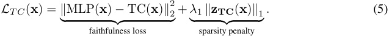
3.2 Circuit analysis with transcoders
We now introduce a novel method for performing feature-level circuit analysis with transcoders, which provides a scalable and interpretable way to identify which transcoder features in different layers connect to compute a given task. Importantly, this method provides insights into the general input-output behavior of MLP sublayers, which SAE-based methods cannot do.
In particular, the primary goal of circuit analysis is to identify a subgraph of the model’s computational graph that is responsible for (most of) the model’s behavior on a given task [11, 19, 20]; this requires a means of evaluating a computational subgraph’s importance to the task in question. In order to
2Note that the “Pythia” family of models computes MLP and attention sublayer outputs in parallel. This means that Equation 2 is thus given by x( prel+1,t) = x(l,t) x( prel,t) . mid+ MLP(l) � �
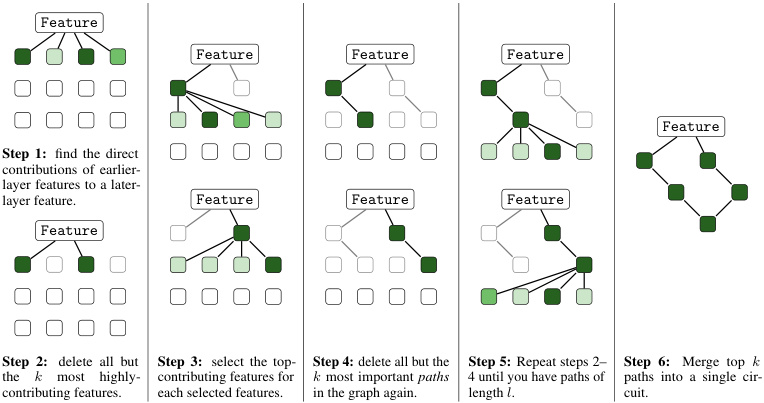
Feature
Feature Feature Feature
Feature
Step 1: find the direct
contributions of earlier-
layer features to a later-
layer feature. Feature Feature Feature
Feature
Step 2: delete all but Step 3: select the top- Step 4: delete all but the Step 5: Repeat steps 2– Step 6: Merge top k
the k most highly- contributing features for k most important paths 4 until you have paths of paths into a single cir-
contributing features. each selected features. in the graph again. length l . cuit.
Figure 2: A visualization of the circuit-finding algorithm.
determine which edges are included in this subgraph, we thus have to compute attributions for each edge: how much the earlier node contributes to the later node’s own contribution. Circuit analysis with SAEs thus entails computing the attribution of pre-MLP SAE features to post-MLP SAE features, as mediated through the MLP. Standard methods for computing attributions are causal patching (which inherently only gives information about local MLP behavior on a single input) and methods like input-times-gradient or attribution patching (which are equivalent in this setting). We will now demonstrate why these methods cannot yield information about the MLP’s general behavior. Letting z be the activation of an earlier-layer feature, z′ be the activation of the later-layer feature, and y be the activation of the MLP at layer l′ , the input-times-gradient is given by:
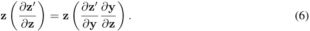
Unfortunately, not only is z input-dependent, but so is∂ ∂z z′as well, because∂ ∂y zis.
This means that we cannot use SAEs to understand the general behavior of MLPs on various inputs. In contrast, we will show that when we replace MLP sublayers with sufficiently faithful and interpretable transcoders, we obtain attributions that neatly factorize into input-dependent terms and input-invariant terms; the latter can be computed just from model and transcoder weights, and tell us about the MLP behavior across all inputs.
3.2.1 Attribution between transcoder feature pairs
We begin by showing how to compute attributions between pairs of transcoder features. This attribution is given by the product of two terms: the earlier feature’s activation (which depends on the input to the model), and the dot product of the earlier feature’s decoder vector with the later feature’s encoder vector (which is independent of the model input).
The following is a more formal restatement. Let zT C(l,i) x( midl,t) denote the scalar activation of the i -th � � feature in the layer l transcoder on token t , as a function of the MLP input x( midl,t)at tokent_in layer l . Then for layer l < l′ , the contribution of feature i in transcoder l to the activation of feature i′ in transcoder l′_ on token t is given by
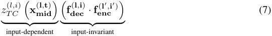
This expression is derived in App. D.2. Note that � fdec(l,i)·f( encl′,i′) � is input-invariant : once the transcoders have been trained, this term does not depend on the input to the model. This term,
analyzed in isolation, can thus be viewed as providing information about the general behavior of the model. The only input-dependent term is zT C(l,i) x( midl,t) , the activation of feature i in the layer l � � transcoder on token t . As such, this expression cleanly factorizes into a term reflecting the general input-invariant connection between the pair of features and an interpretable term reflecting the importance of the earlier feature on the current input.
3.2.2 Attribution through attention heads
So far, we have addressed how to find the attribution of a lower-layer transcoder feature directly on a higher-layer transcoder feature at the same token. But transcoder features can also be mediated by attention heads. We will thus extend the above analysis to account for finding the attribution of transcoder features through the OV circuit of an attention head. For a full derivation, see App. D.3.
As before, we want to understand what causes feature i′ in the layer l′ transcoder to activate on token t . Given attention head h at layer l with l < l′ , the contribution of token s at layer l through head h to feature i′ in layer l′ at token t is given by
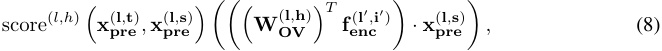
xpre(l,t),x( prel,s) is the attention score for head h and layer l from token s to token t . where score(l,h) � �
3.2.3 Finding computational subgraphs
Using this observation, we present a method for finding computational subgraphs. We now know how to determine, on a given input and transcoder feature i′ , which earlier-layer transcoder features i are important for causing i′ to activate. Once we have identified some earlier-layer features i that are relevant to i′ , then we can then recurse on i to understand the most important features causing i to activate by repeating this process.
Doing so iteratively (and greedily pruning all but the most important features at each step) thus yields a set of computational paths (a sequence of connected edges). These computational paths can then be combined into a computational subgraph, in such a way that each node (transcoder feature or attention head), edge, and path is assigned an attribution. A full description of the circuit-finding algorithm is presented in App. D.5. Figure 2 provides a visualization of this algorithm.
3.2.4 De-embeddings: a special case of input-invariant information
Earlier, we discussed how to compute the input-invariant connection between a pair of transcoder features, providing insights on general behavior of the model. A related technique is something that we call de-embeddings . A de-embedding vector for a transcoder feature is a vector that contains the direct effect of the embedding of each token in the model’s vocabulary on the transcoder feature. The de-embedding vector for feature i in the layer l transcoder is given by WE T fenc(l,i), whereW Eis the model’s token embedding matrix. Importantly, this vector gives us input-invariant information about how much each possible input token would directly contribute to the feature’s activation.
Given a de-embedding vector, looking at which tokens in the model’s vocabulary have the highest deembedding scores tells us about the feature’s general behavior. For example, for a certain GPT2-small MLP0 transcoder feature that we investigated, the tokens with the highest scores were oglu , owsky , zyk , chenko , and kowski . Notice the interpretable pattern: all of these tokens come from European surnames, primarily Polish ones, suggesting that the feature generally fires on Polish surnames.
4 Comparison with SAEs
Transcoders were originally conceived as a variant of SAEs, and as such, there are many similarities between them. They differ only in their training objective: because SAEs are autoencoders, the faithfulness term in the SAE loss measures the reconstruction error between the SAE’s output and its original input. In contrast, the faithfulness term of the transcoder loss measures the error between the transcoder’s output and the original MLP sublayer’s output.
Table 1: The number of interpretable features, possibly-interpretable features, and uninterpretable features for the transcoder and MLP-in SAE. Of the interpretable features, we additionally deemed 6 transcoder features, and 16 SAE features to be “context-free”, meaning they appeared to fire on a single token without any evident context-dependent patterns.
| Transcoder | MLP-in SAE | |
|---|---|---|
| # interpretable | 41 | 38 |
| # maybe | 8 | 8 |
| # uninterpretable | 1 | 4 |
Because of these similarities, SAEs can be quantitatively evaluated (for sparsity and fidelity) and qualitatively evaluated (for feature interpretability) in precisely the same way as transcoders, using standard SAE evaluation methods [4, 29]. We now report the results of evaluations comparing SAEs to transcoders on these metrics, and find that transcoders are comparable to or better than SAEs.
4.1 Blind interpretability comparison of transcoders to SAEs
In order to evaluate the interpretability of transcoders, we manually attempted to interpret 50 random features from a Pythia-410M layer 15 transcoder and 50 random features from a Pythia-410M layer 15 SAE trained on MLP inputs .3 For each feature, the examples in a subset of the OpenWebText corpus that caused the feature to activate the most were computed ahead of time. Then, the features from both the SAE and the transcoder were randomly shuffled. For each feature, the maximum-activating examples were displayed, but not whether the feature came from an SAE or transcoder. We recorded for each feature whether or not there seemed to be an interpretable pattern, and only after examining every feature did we look at which features came from where. The results, shown in Table 1, suggest transcoder features are approximately as interpretable as SAE features. This further suggests that transcoders incur no penalties compared to SAEs.
4.2 Quantitative comparison of transcoders to SAEs
4.2.1 Evaluation metrics
We evaulate transcoders qualitatively on their features’ interpretability as judged by a human rater, and quantitatively on the sparsity of their activations and their fidelity to the original MLP’s computation.
As a qualitative proxy measure for the interpretability of a feature, we follow Bricken et al. [7] in assuming that interpretable features should demonstrate interpretable patterns in the examples that cause them to activate. To this end, one can run the transcoder on a large dataset of text, see which dataset examples cause the feature to activate, and see if there is an interpretable pattern among these tokens. While imperfect [6], this is still a reasonable proxy for an inherently qualitative concept.
To measure the sparsity of a transcoder, one can run the transcoder on a dataset of inputs, and calculate the mean number of features active on each token (the mean L 0 norm of the activations). To measure the fidelity of the transcoder, one can perform the following procedure. First, run the original model on a large dataset of inputs, and measure the next-token-prediction cross entropy loss on the dataset. Then, replace the model’s MLP sublayer corresponding to the transcoder with the transcoder , and measure the modified model’s mean loss on the dataset. Now, the faithfulness of the transcoder can be quantified as the difference between the modified model’s loss and the original model’s loss.
4.2.2 Results
We trained SAEs and transcoders on activations from GPT2-small [44], Pythia-410M, and Pythia1.4B [2]. For each model, we trained multiple SAEs and transcoders on the same inputs, but with different values of the λ 1 hyperparameter controlling the fidelity-sparsity tradeoff for each SAE and each transcoder. The transcoders were trained on MLP-in and MLP-out activations, while SAEs were
3We used SAEs trained on MLP inputs here because the interpretability case studies look at feature activations, which are solely dependent on the encoder vectors of the SAEs and transcoders. Because transcoders’ encoder vectors live in MLP input space, we thought that the comparison would be most accurate if our SAEs’ encoder vectors also lived in MLP input space.
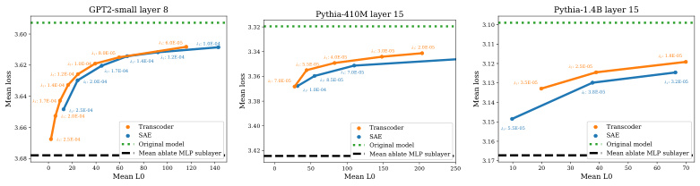
GPT2-small layer 8 Pythia-410M layer 15 Pythia-1.4B layer 15
3.32 3.10
3.60
3.623.64 1 : 1.7E-04 1 : 1.4E-04 1 : 1.2E-04 1 : 1.0E-04 1 : 2.0E-04 1 : 8.0E-05 1 : 1.7E-04 1 : 1.4E-04 1 : 6.0E-05 1 : 1.2E-04 1 : 1.0E-04 3.343.363.38 1 : 7.0E-05 1 : 5.5E-05 1 : 1.0E-04 1 : 8.5E-05 1 : 4.0E-05 1 : 7.0E-05 1 : 3.0E-05 1 : 2.0E-05 3.113.123.133.14 1 : 3.5E-05 1 : 2.5E-05 1 : 3.8E-05 1 : 1.8E-05 1 : 3.2E-05
3.66 1 : 2.0E-04 1 : 2.5E-04 Transcoder 3.40 Transcoder 3.15 1 : 5.5E-05 Transcoder
3.68 1 : 2.5E-04 SAEOriginal modelMean ablate MLP sublayer 3.42 SAEOriginal modelMean ablate MLP sublayer 3.163.17 SAEOriginal modelMean ablate MLP sublayer
0 20 40 60 80 100 120 140 0 50 100 150 200 250 10 20 30 40 50 60 70
Mean L0 Mean L0 Mean L0
Mean loss Mean loss Mean loss
Figure 3: The sparsity-accuracy tradeoff of transcoders versus SAEs on GPT2-small, Pythia-410M, and Pythia-1.4B. Each point corresponds to a trained SAE or transcoder, and is labeled with the L1 regularization penalty λ 1 used during training.
trained on MLP-out activations (as these are the activations that MLP SAEs are typically trained on). Due to compute limitations, we used the same learning rate, which was determined via a hyperparameter sweep on transcoders , for both SAEs and transcoders. This means that the learning rate might not be optimal for SAEs. Nevertheless, we did perform a separate hyperparameter sweep of λ 1 for the SAEs and transcoders.
We evaluated each SAE and transcoder on the same 3.2M tokens of OpenWebText data [21]. We also recorded the loss of the unmodified and mean-ablated model (always replacing the MLP sublayer output with its mean output over the dataset) as best- and worst-case bounds, respectively.
We summarize the Pareto frontiers of the sparsity-accuracy tradeoff for all models in Figure 3. In all cases, transcoders are equal to or better than SAEs. In fact, the gap between transcoders and SAEs seems to widen on larger models. Note, however, that compute limitations prevented us from performing more exhaustive hyperparameter sweeps; as such, it might be possible that a different set of hyperparameters could have allowed SAEs to surpass transcoders. Nonetheless, these results make us optimistic that using transcoders incurs no penalties versus SAEs trained on MLP activations.
5 Circuit analysis case studies
5.1 Blind case study: reverse-engineering a feature
To understand the utility of transcoders for circuit analysis, we carried out nine blind case studies , where we randomly selected individual transcoder features in a ninth-layer (of 12) GPT2-small transcoder and used circuit analysis to form a hypothesis about the semantics of the feature— without looking at the text of examples that cause the feature to activate . In blind case studies, we use a combination of input-invariant and input-dependent information to allow us to evaluate transcoders as a tool to infer model behavior with minimal prompt information. This better reflects a key goal of mechanistic interpretability: to be able to understand model behavior on unknown, unforeseen tasks.
In contrast, reverse-engineering a feature where one already has an idea of its behavior can introduce confirmation bias. For instance, looking at activation patterns prior to circuit analysis can predispose a researcher to seek out only circuits that corroborate their interpretation of these activation patterns, potentially ignoring circuits that reveal other information about the feature. Conversely, if the circuit analysis method is faulty and yields some explanations that are not reflected in the feature activations, then the researcher might ignore those spurious explanations and thus obtain an overly-positive assessment of the circuit analysis method. The “rules of the game” for blind case studies are that:
-
The specific tokens contained in any prompt are not allowed to be directly seen. As such, prompts and tokens can only be referenced by their index in the dataset.
-
These prompts may be used to compute input-dependent information (activations and circuits), as long as the tokens themselves remain hidden.
-
Any input-invariant information, including feature de-embeddings, is allowed.
In this section, we summarise a specific blind case study, how we used our circuits to reverse-engineer feature 355 in our layer 8 transcoder. Other studies, as well as a longer description of the study summarized here, can be found in App. H.
Note that we use the following compact notation for transcoder features: tcA[B]@C refers to feature B in the layer A transcoder at token C .
Building the first circuit. We started by getting a list of indices of the top-activating prompts in the dataset for tc8[355] . Importantly, we did not look at the actual tokens in these prompts, as doing so would violate Rule 1. For our first input, we chose example 5701, token 37; tc8[355] fires at strength 11.91 on this token in this input. Our greedy algorithm for finding the most important computational paths for causing tc8[355]@37 to fire revealed contributions from the current token (37) and earlier tokens (like 35, 36, and 31).
Current-token features. From token 37, we found strong contributions from tc0[16632]@37 and tc0[9188]@37 . Input-invariant de-embeddings of these layer 0 features revealed that they primarily activate on variants of ; , suggesting that token 37 contributed to the feature by virtue of being a semicolon. Another feature which contributed strongly through the current token, tc6[11831] , showed a similar pattern. Among the top input-invariant connections from layer 0 transcoder features to tc6[11831] , we once again found the same semicolon features tc0[16632] and tc0[9188] .
Previous-token features. Next we checked computational paths from previous tokens through attention heads. Looking at these contextual computational paths revealed a contribution from tc0[13196]@36 ; the top de-embeddings for this feature were years like 1973 , 1971 , 1967 , and 1966 . Additionally, there was a contribution from tc0[10109]@31 , for which the top de-embedding was ( .
Furthermore, there was a contribution from tc6[21046]@35 . The top input-invariant connections to this feature from layer 0 were tc0[16382] and tc0[5468] . The top de-embeddings for the former were tokens associated with Eastern European last names (e.g. kowski , chenko , owicz ) and the top de-embeddings for the latter feature were English surnames (e.g. Burnett , Hawkins , Johnston ) . This heavily suggested that tc6[21046] was a surname feature.
Thus, the circuit revealed this pattern was important to our feature: “ ( -[?]-[?]-[?]-[surname]-[year]- ; ”.
Analysis. We hypothesized that tc8[355] fires on semicolons in parenthetical citations like “(Vaswani et al. 2017 ; Elhage et al. 2021)”. Further investigation on another input yielded a similar pattern—along with a feature whose top de-embedding tokens included Accessed , Retrieved , Neuroscience , and Springer . This bolstered our hypothesis even more.
Here, we decided to end the blind case study and check if our hypothesis was correct. Sure enough, the top activating examples included semicolons in citations such as “(Poeck, 1969; Rinn, 1984)” and “(Robinson et al., 1984; Starkstein et al., 1988)”. We note that the first of these is the example at index (5701 , 37) we analyzed above.
“Restricted” blind case studies. Because MLP0 features tend to be single-token, significant information about the original prompt can be obtained by looking at which MLP0 transcoder features are active and then taking their de-embeddings. In order to address this and more fully investigate the power of input-invariant circuit analysis, six of the eight case studies that we carried out were restricted blind case studies , in which all input-dependent MLP0 feature information is forbidden to use. For more details on these case studies, see Appendix H.2.
5.2 Analyzing the GPT2-small “greater-than” circuit
We now turn to address the “greater-than” circuit in GPT2-small previously considered by Hanna et al. [25]. They considered the following question: given a prompt such as “The war lasted from 1737 to 17”, how does the model know that the predicted next year token has to be greater than 1737? In their original work, they analyzed the circuit responsible for this behavior and demonstrated that MLP10 plays an important role, looking into the operation of MLP10 at a neuronal level. We now apply transcoders and the circuit analysis tools accompanying them to this same problem.
5.2.1 Initial investigation
First, we used the methods from Sec. 3.2.3 to investigate a single prompt and obtain the computational paths most relevant to the task. This placed a high attribution on MLP10 features, which were in turn activated by earlier-layer features mediated by attention head 1 in layer 9. This corroborates the analysis in the original work.
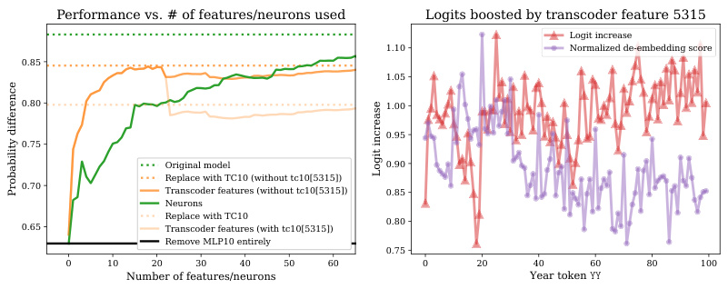
Performance vs. # of features/neurons used Logits boosted by transcoder feature 5315
Logit increase
1.10 Normalized de-embedding score
0.85
1.05
0.80 1.00
0.95
0.75
Original model 0.90
Replace with TC10 (without tc10[5315])
0.70 Transcoder features (without tc10[5315]) 0.85
Neurons
0.65 Replace with TC10Transcoder features (with tc10[5315]) 0.80
Remove MLP10 entirely
0.75
0 10 20 30 40 50 60 0 20 40 60 80 100
Number of features/neurons Year token
Logit increase
Probability difference
Figure 4: Left: Performance according to the probability difference metric when all but the top k features or neurons in MLP10 are zero-ablated. Right: The DLA and de-embedding score for tc10[5315] , which contributed negatively to the transcoder’s performance.
Next, we investigated which MLP10 transcoder features were most important on a variety of prompts, and how their activations are mediated by attention head 1 in layer 9. Following the original work, we generated all 100 prompts of the form “The war lasted from 17 YY to 17”, where YY denotes a two-digit number. We found that the MLP10 features with the highest variance in activations over this set of prompts also had top input-dependent connections from MLP0 features through attention head 1 in layer 9 whose top de-embeddings were two-digit numbers. The top input-invariant connections from MLP0 features through attention head 1 in layer 9 to MLP10 features also had two-digit numbers among their top de-embedding tokens . This positive result was somewhat unexpected, given that there are only 100 two-digit number tokens in the model’s vocabulary of over 50k tokens.
We then used direct logit attribution (DLA) [15] to look at the effect of each transcoder feature on the predicted logits of each YY token in the model’s vocabulary. These results, along with deembedding scores for each YY token, can be seen in Figure 5. The de-embeddings scores are highest for YY tokens where years following them are boosted and years preceding them are inhibited.
5.2.2 Comparison with neuronal approach
Next, we compared the transcoder approach to the neuronal approach to see whether transcoders give a sparser description of the circuit than MLP neurons do. To do this, we computed the 100 highest-variance layer 10 transcoder features and MLP10 neurons. Then, for 1 ≤ k ≤ 100, we zero-ablated all but the top k features in the transcoder/neurons in MLP10 and measured how this affected the model’s performance according to the mean probability difference metric presented in the original paper. We also evaluated the original model with respect to this metric, along with the model when MLP10 is replaced with the full transcoder.
The results are shown in the left half of Figure 4. For fewer than 24 features, the transcoder approach outperforms the neuronal approach; its performance drops sharply, however, around this point. Further investigation revealed that tc10[5315] , the 24th-highest-variance transcoder feature, was responsible for this drop in performance. The DLA for this feature is plotted in the right half of Figure 4. Notice how, in contrast with the three highest-variance transcoder features, tc10[5315] displays a flatter DLA, boosting all tokens equally. This might explain why it contributes to poor performance. To account for this, note that the left half of Figure 4 also demonstrates the performance of the transcoder when this “bad feature” is removed.
While the transcoder does not recover the full performance of the original model, it needs only a handful of features to recover most of the original model’s performance; many more MLP neurons are needed to achieve the same level of performance. This suggests that the transcoder is particularly useful for obtaining a sparse, understandable approximation of MLP10. Furthermore, the transcoder features suggest a simple way that the MLP10 computation may (approximately) happen: by a small set of features that fire on years in certain ranges and boost the logits for the following years.
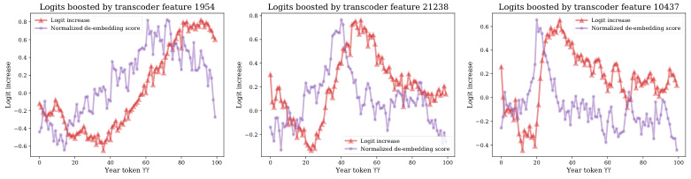
Logits boosted by transcoder feature 1954 Logits boosted by transcoder feature 21238 Logits boosted by transcoder feature 10437
0.8 Logit increaseNormalized de-embedding score 0.8 0.6 Logit increaseNormalized de-embedding score
0.6 0.6
0.4
0.4
0.4
0.2 0.2
0.2
0.0 0.0
0.2 0.0
0.2
0.4
0.2
0.6 Logit increaseNormalized de-embedding score 0.4
0 20 40 60 80 100 0 20 40 60 80 100 0 20 40 60 80 100
Year token Year token Year token
Logit increase Logit increase Logit increase
Figure 5: For the three MLP10 transcoder features with the highest activation variance over the “greater-than” dataset, and for every possible YY token, we plot the direct logit attribution (the extent to which the feature boosts the output probability of YY ) and the de-embedding score (an input-invariant measurement of how much YY causes the feature to fire).
6 Related work
Circuit analysis is a common framework for exploring model internals [15, 32, 41]. A number of approaches exist to find circuits and meaningful components in models, including causal approaches [20], automated circuit discovery [11], and sparse probing [24]. Causal methods include activation patching [28, 49, 52], attribution patching [30, 39], and path patching [22, 50]. Much circuit analysis work has focused on attention head circuits [18], including copying heads [15], induction heads [42], copy suppression [35], and successor heads [23]. Methods connecting circuit analysis to SAEs include He et al. [27], Batson et al. [1] and Marks et al. [34]. Our recursive greedy circuit-finding approach was largely based on that of Dunefsky & Cohan [13].
Sparse autoencoders have been used to disentangle model activations into interpretable features [7, 12, 51]. The development of SAEs was motivated by the theory of superposition in neural representations [17]. Since then, much recent work has focused on exploring and interpreting SAEs, and connecting them to preexisting mechanistic interpretability techniques. Notable contributions include tools for exploring SAE features, such as SAE lens [5]; applications of SAEs to attention sublayers [29]; scaling up SAEs to Claude 3 Sonnet [48] and improved SAE architectures [45]. Transcoders have been previously proposed as a variant of SAEs under the names “predicting future activations” [47] and “MLP stretchers” [31], but not explored in detail.
7 Conclusion
Fine-grained circuit analysis requires an approach to handling MLP sublayers. To our knowledge, the transcoder-based circuit analysis method presented here is the only such approach that cleanly disentangles input-invariant information from input-dependent information . Importantly, transcoders bring these benefits without sacrificing fidelity and interpretability: when compared to state-ofthe-art feature-level interpretability tools (SAEs), we find that transcoders achieve equal or better performance. We thus believe that transcoders are an improvement over other forms of feature-level interpretability tools for MLPs, such as SAEs on MLP outputs.
Future work on transcoders includes directions such as comparing the features learned by transcoders to those learned by SAEs, seeing if there are classes of features that transcoders struggle to learn, finding interesting examples of novel circuits, and scaling circuit analysis to larger models.
Overall, we believe that transcoders are an exciting new development for circuit analysis and hope that they can continue to yield deeper insights into model behaviors.
Limitations Transcoders, like SAEs, are approximations to the underlying model, and the resulting error may lose key information. We find transcoders to be approximately as unfaithful to the model’s computations as SAEs are (as measured by the cross-entropy loss), although we leave comparing the errors to future work. Our circuit analysis method (App. D.5) does not engage with how attention patterns are computed, and treats them as fixed. A promising direction of future work would be trying to extend transcoders to understand the computation of attention patterns, approximating the attention softmax. We only present circuit analysis results for a few qualitative case studies, and our results would be stronger with more systematic analysis.
Impact statement
This paper seeks to advance the field of mechanistic interpretability by contributing a new tool for circuit analysis. We see this as foundational research, and expect the impact to come indirectly from future applications of circuit analysis such as understanding and debugging unexpected model behavior and controlling and steering models to be more useful to users.
Acknowledgments and Disclosure of Funding
Jacob and Philippe were funded by a grant from AI Safety Support Ltd. Jacob was additionally funded by a grant from the Long-Term Future Fund. Philippe was additionally funded by NSF GRFP grant DGE-2036197. Compute was generously provided by Yale University.
We would like to thank Andy Arditi, Lawrence Chan, and Matt Wearden for providing detailed feedback on our manuscript. We would also like to thank Senthooran Rajamanoharan and Juan David Gil for discussions during the research process, and Joseph Bloom for advice on how to use (and extend) the SAELens library. Finally, we would like to thank Joshua Batson for a discussion that inspired us to investigate transcoders in the first place.
References
-
[1] Batson, J., Chen, B., and Jones, A. Using features for easy circuit identification, 2024. URL
https://transformer-circuits.pub/2024/march-update/index.html# feature-heads. -
[2] Biderman, S., Schoelkopf, H., Anthony, Q., Bradley, H., O’Brien, K., Hallahan, E., Khan, M. A., Purohit, S., Prashanth, U. S., Raff, E., Skowron, A., Sutawika, L., and van der Wal, O. Pythia: A Suite for Analyzing Large Language Models Across Training and Scaling, May 2023. URL
http://arxiv.org/abs/2304.01373. arXiv:2304.01373 [cs]. -
[3] Bills, S., Cammarata, N., Mossing, D., Tillman, H., Gao, L., Goh, G., Sutskever, I., Leike, J., Wu, J., and Saunders, W. Language models can explain neurons in language models, 2023. URL
https://openaipublic.blob.core.windows.net/neuron-explainer/ paper/index.html. -
[4] Bloom, J. Open Source Sparse Autoencoders for all Residual Stream Layers of GPT2-Small, 2024. URL
https://www.lesswrong.com/posts/f9EgfLSurAiqRJySD. -
[5] Bloom, J. SAELens Training, 2024. URL
https://jbloomaus.github.io/SAELens/. -
[6] Bolukbasi, T., Pearce, A., Yuan, A., Coenen, A., Reif, E., Viégas, F., and Wattenberg, M. An interpretability illusion for bert. arXiv preprint arXiv:2104.07143 , 2021.
-
[7] Bricken, T., Templeton, A., Batson, J., Chen, B., Jermyn, A., Conerly, T., Turner, N., Anil, C., Denison, C., Askell, A., Lasenby, R., Wu, Y., Kravec, S., Schiefer, N., Maxwell, T., Joseph, N., Hatfield-Dodds, Z., Tamkin, A., Nguyen, K., McLean, B., Burke, J. E., Hume, T., Carter, S., Henighan, T., and Olah, C. Towards Monosemanticity: Decomposing Language Models With Dictionary Learning. Transformer Circuits Thread , 2023.
-
[8] Brown, T. B., Mann, B., Ryder, N., Subbiah, M., Kaplan, J., Dhariwal, P., Neelakantan, A., Shyam, P., Sastry, G., Askell, A., Agarwal, S., Herbert-Voss, A., Krueger, G., Henighan, T., Child, R., Ramesh, A., Ziegler, D. M., Wu, J., Winter, C., Hesse, C., Chen, M., Sigler, E., Litwin, M., Gray, S., Chess, B., Clark, J., Berner, C., McCandlish, S., Radford, A., Sutskever, I., and Amodei, D. Language Models are Few-Shot Learners, July 2020. URL
http://arxiv. org/abs/2005.14165. arXiv:2005.14165 [cs]. -
[9] Chris Olah. Mechanistic Interpretability, Variables, and the Importance of Interpretable Bases, 2022. URL
https://transformer-circuits.pub/2022/mech-interp-essay/index. html. -
[10] Chrupała, G. and Alishahi, A. Correlating neural and symbolic representations of language. In Proceedings of the 57th Annual Meeting of the Association for Computational Linguistics , pp. 2952–2962, 2019. doi: 10.18653/v1/P19-1283. URL
http://arxiv.org/abs/1905.06401. arXiv:1905.06401 [cs]. -
[11] Conmy, A., Mavor-Parker, A. N., Lynch, A., Heimersheim, S., and Garriga-Alonso, A. Towards Automated Circuit Discovery for Mechanistic Interpretability, October 2023. URL
http: //arxiv.org/abs/2304.14997. arXiv:2304.14997 [cs]. -
[12] Cunningham, H., Ewart, A., Riggs, L., Huben, R., and Sharkey, L. Sparse Autoencoders Find Highly Interpretable Features in Language Models, October 2023. URL
http://arxiv.org/ abs/2309.08600. arXiv:2309.08600 [cs]. -
[13] Dunefsky, J. and Cohan, A. Observable Propagation: A Data-Efficient Approach to Uncover Feature Vectors in Transformers, December 2023. URL
http://arxiv.org/abs/2312. 16291. arXiv:2312.16291 [cs]. -
[14] Dunefsky, J., Chlenski, P., Rajamanoharan, S., and Nanda, N. Case Studies in ReverseEngineering Sparse Autoencoder Features by Using MLP Linearization, 2024. URL
https: //www.alignmentforum.org/posts/93nKtsDL6YY5fRbQv. Published: Alignment Forum. -
[15] Elhage, N., Nanda, N., Olsson, C., Henighan, T., Joseph, N., Mann, B., Askell, A., Bai, Y., Chen, A., Conerly, T., DasSarma, N., Drain, D., Ganguli, D., Hatfield-Dodds, Z., Hernandez, D., Jones, A., Kernion, J., Lovitt, L., Ndousse, K., Amodei, D., Brown, T., Clark, J., Kaplan, J., McCandlish, S., and Olah, C. A Mathematical Framework for Transformer Circuits. Transformer Circuits Thread , 2021.
-
[16] Elhage, N., Hume, T., Olsson, C., Nanda, N., Henighan, T., Johnston, S., ElShowk, S., Joseph, N., DasSarma, N., Mann, B., Hernandez, D., Askell, A., Ndousse, K., Jones, A., Drain, D., Chen, A., Bai, Y., Ganguli, D., Lovitt, L., Hatfield-Dodds, Z., Kernion, J., Conerly, T., Kravec, S., Fort, S., Kadavath, S., Jacobson, J., Tran-Johnson, E., Kaplan, J., Clark, J., Brown, T., McCandlish, S., Amodei, D., and Olah, C. Softmax linear units. Transformer Circuits Thread , 2022. https://transformer-circuits.pub/2022/solu/index.html.
-
[17] Elhage, N., Hume, T., Olsson, C., Schiefer, N., Henighan, T., Kravec, S., Hatfield-Dodds, Z., Lasenby, R., Drain, D., Chen, C., Grosse, R., McCandlish, S., Kaplan, J., Amodei, D., Wattenberg, M., and Olah, C. Toy Models of Superposition, September 2022. URL
http: //arxiv.org/abs/2209.10652. arXiv:2209.10652 [cs]. -
[18] Ferrando, J., Sarti, G., Bisazza, A., and Costa-jussà, M. R. A Primer on the Inner Workings of Transformer-based Language Models, May 2024. URL
http://arxiv.org/abs/2405. 00208. arXiv:2405.00208 [cs] version: 2. -
[19] Gandelsman, Y., Efros, A. A., and Steinhardt, J. Interpreting CLIP’s Image Representation via Text-Based Decomposition, March 2024. URL
http://arxiv.org/abs/2310.05916. arXiv:2310.05916 [cs]. -
[20] Geiger, A., Lu, H., Icard, T., and Potts, C. Causal Abstractions of Neural Networks, October 2021. URL
http://arxiv.org/abs/2106.02997. arXiv:2106.02997 [cs]. -
[21] Gokaslan, A. and Cohen, V. OpenWebText Corpus, 2019.
-
[22] Goldowsky-Dill, N., MacLeod, C., Sato, L., and Arora, A. Localizing Model Behavior with Path Patching, May 2023. URL
http://arxiv.org/abs/2304.05969. arXiv:2304.05969 [cs]. -
[23] Gould, R., Ong, E., Ogden, G., and Conmy, A. Successor Heads: Recurring, Interpretable Attention Heads In The Wild, December 2023. URL
http://arxiv.org/abs/2312.09230. arXiv:2312.09230 [cs]. -
[24] Gurnee, W., Nanda, N., Pauly, M., Harvey, K., Troitskii, D., and Bertsimas, D. Finding Neurons in a Haystack: Case Studies with Sparse Probing, June 2023. URL
http://arxiv.org/abs/ 2305.01610. arXiv:2305.01610 [cs]. -
[25] Hanna, M., Liu, O., and Variengien, A. How does GPT-2 compute greater-than?: Interpreting mathematical abilities in a pre-trained language model, November 2023. URL
http://arxiv. org/abs/2305.00586. arXiv:2305.00586 [cs]. -
[26] Hanna, M., Pezzelle, S., and Belinkov, Y. Have Faith in Faithfulness: Going Beyond Circuit Overlap When Finding Model Mechanisms, 2024. _eprint: 2403.17806.
-
[27] He, Z., Ge, X., Tang, Q., Sun, T., Cheng, Q., and Qiu, X. Dictionary Learning Improves Patch-Free Circuit Discovery in Mechanistic Interpretability: A Case Study on Othello-GPT, February 2024. URL
http://arxiv.org/abs/2402.12201. arXiv:2402.12201 [cs]. -
[28] Heimersheim, S. and Nanda, N. How to use and interpret activation patching. arXiv preprint arXiv:2404.15255 , 2024.
-
[29] Kissane, C., Krzyzanowski, R., Conmy, A., and Nanda, N. Attention SAEs Scale to GPT2 Small, 2024. URL
https://www.alignmentforum.org/posts/FSTRedtjuHa4Gfdbr. Published: Alignment Forum. -
[30] Kramár, J., Lieberum, T., Shah, R., and Nanda, N. AtP*: An efficient and scalable method for localizing LLM behaviour to components, 2024. _eprint: 2403.00745.
-
[31] Li, M., Marks, S., and Mueller, A. dictionary_learning repository, 2023. https://github.com/saprmarks/dictionary_learning?tab=readme-ov-file#extra-functionalitysupported-by-this-repo.
-
[32] Lieberum, T., Rahtz, M., Kramár, J., Nanda, N., Irving, G., Shah, R., and Mikulik, V. Does Circuit Analysis Interpretability Scale? Evidence from Multiple Choice Capabilities in Chinchilla, July 2023. URL
http://arxiv.org/abs/2307.09458. arXiv:2307.09458 [cs]. -
[33] Lipton, Z. C. The mythos of model interpretability, 2017.
-
[34] Marks, S., Rager, C., Michaud, E. J., Belinkov, Y., Bau, D., and Mueller, A. Sparse Feature Circuits: Discovering and Editing Interpretable Causal Graphs in Language Models, March 2024. URL
http://arxiv.org/abs/2403.19647. arXiv:2403.19647 [cs]. -
[35] McDougall, C., Conmy, A., Rushing, C., McGrath, T., and Nanda, N. Copy Suppression: Comprehensively Understanding an Attention Head. ArXiv , abs/2310.04625, 2023. URL
https://api.semanticscholar.org/CorpusID:263831290. -
[36] Nanda, N. Open source replication & commentary on anthropic’s dictionary learning paper. Alignment Forum , 2023. https://www.alignmentforum.org/posts/fKuugaxt2XLTkASkk.
-
[37] Nanda, N. and Bloom, J. TransformerLens, 2022. URL
https://github.com/ TransformerLensOrg/TransformerLens. -
[38] Nanda, N., Rajamanoharan, S., Kram\’ar, J., and Shah, R. Fact Finding: Attempting to Reverse-Engineer Factual Recall on the Neuron Level, December 2023. URL
https://www. alignmentforum.org/posts/iGuwZTHWb6DFY3sKB. Publication Title: Alignment Forum. -
[39] Neel Nanda. Attribution Patching: Activation Patching At Industrial Scale, 2024. URL
https: //www.neelnanda.io/mechanistic-interpretability/attribution-patching. -
[40] Olah, C., Mordvintsev, A., and Schubert, L. Feature visualization. Distill , 2017. doi: 10.23915/ distill.00007. https://distill.pub/2017/feature-visualization.
-
[41] Olah, C., Cammarata, N., Schubert, L., Goh, G., Petrov, M., and Carter, S. Zoom In: An Introduction to Circuits. Distill , 5(3):e00024.001, March 2020. ISSN 2476-0757. doi: 10. 23915/distill.00024.001. URL
https://distill.pub/2020/circuits/zoom-in. -
[42] Olsson, C., Elhage, N., Nanda, N., Joseph, N., DasSarma, N., Henighan, T., Mann, B., Askell, A., Bai, Y., Chen, A., Conerly, T., Drain, D., Ganguli, D., Hatfield-Dodds, Z., Hernandez, D., Johnston, S., Jones, A., Kernion, J., Lovitt, L., Ndousse, K., Amodei, D., Brown, T., Clark, J., Kaplan, J., McCandlish, S., and Olah, C. In-context Learning and Induction Heads, September 2022. URL
http://arxiv.org/abs/2209.11895. arXiv:2209.11895 [cs]. -
[43] OpenAI, Achiam, J., Adler, S., Agarwal, S., Ahmad, L., Akkaya, I., Aleman, F. L., Almeida, D., Altenschmidt, J., Altman, S., Anadkat, S., Avila, R., Babuschkin, I., Balaji, S., Balcom, V., Baltescu, P., Bao, H., Bavarian, M., Belgum, J., Bello, I., Berdine, J., Bernadett-Shapiro, G., Berner, C., Bogdonoff, L., Boiko, O., Boyd, M., Brakman, A.-L., Brockman, G., Brooks, T., Brundage, M., Button, K., Cai, T., Campbell, R., Cann, A., Carey, B., Carlson, C., Carmichael, R., Chan, B., Chang, C., Chantzis, F., Chen, D., Chen, S., Chen, R., Chen, J., Chen, M., Chess, B., Cho, C., Chu, C., Chung, H. W., Cummings, D., Currier, J., Dai, Y., Decareaux, C., Degry, T., Deutsch, N., Deville, D., Dhar, A., Dohan, D., Dowling, S., Dunning, S., Ecoffet, A., Eleti, A., Eloundou, T., Farhi, D., Fedus, L., Felix, N., Fishman, S. P., Forte, J., Fulford, I., Gao, L., Georges, E., Gibson, C., Goel, V., Gogineni, T., Goh, G., Gontijo-Lopes, R., Gordon, J., Grafstein, M., Gray, S., Greene, R., Gross, J., Gu, S. S., Guo, Y., Hallacy, C., Han, J., Harris, J., He, Y., Heaton, M., Heidecke, J., Hesse, C., Hickey, A., Hickey, W., Hoeschele, P., Houghton, B., Hsu, K., Hu, S., Hu, X., Huizinga, J., Jain, S., Jain, S., Jang, J., Jiang, A., Jiang, R., Jin, H., Jin, D., Jomoto, S., Jonn, B., Jun, H., Kaftan, T., Kaiser, L., Kamali, A., Kanitscheider, I., Keskar, N. S., Khan, T., Kilpatrick, L., Kim, J. W., Kim, C., Kim, Y., Kirchner, J. H., Kiros, J., Knight, M., Kokotajlo, D., Kondraciuk, L., Kondrich, A., Konstantinidis, A., Kosic, K., Krueger, G., Kuo, V., Lampe, M., Lan, I., Lee, T., Leike, J., Leung, J., Levy, D., Li, C. M., Lim, R., Lin, M., Lin, S., Litwin, M., Lopez, T., Lowe, R., Lue, P., Makanju, A., Malfacini, K., Manning, S., Markov, T., Markovski, Y., Martin, B., Mayer, K., Mayne, A., McGrew, B., McKinney, S. M., McLeavey, C., McMillan, P., McNeil, J., Medina, D., Mehta, A., Menick, J., Metz, L., Mishchenko, A., Mishkin, P., Monaco, V., Morikawa, E., Mossing, D., Mu, T., Murati, M., Murk, O., Mély, D., Nair, A., Nakano, R., Nayak, R., Neelakantan, A., Ngo, R., Noh, H., Ouyang, L., O’Keefe, C., Pachocki, J., Paino, A., Palermo, J., Pantuliano, A., Parascandolo, G., Parish, J., Parparita, E., Passos, A., Pavlov, M., Peng, A., Perelman, A., Peres, F. d. A. B., Petrov, M., Pinto, H. P. d. O., Michael, Pokorny, Pokrass, M., Pong, V. H., Powell, T., Power, A., Power, B., Proehl, E., Puri, R., Radford, A., Rae, J., Ramesh, A., Raymond, C., Real, F., Rimbach, K., Ross, C., Rotsted, B., Roussez, H., Ryder, N., Saltarelli, M., Sanders, T., Santurkar, S., Sastry, G., Schmidt, H., Schnurr, D., Schulman, J., Selsam, D., Sheppard, K., Sherbakov, T., Shieh, J., Shoker, S., Shyam, P., Sidor, S., Sigler, E., Simens, M., Sitkin, J., Slama, K., Sohl, I., Sokolowsky, B., Song, Y., Staudacher, N., Such, F. P., Summers, N., Sutskever, I., Tang, J., Tezak, N., Thompson, M. B., Tillet, P., Tootoonchian, A., Tseng, E., Tuggle, P., Turley, N., Tworek, J., Uribe, J. F. C., Vallone, A., Vijayvergiya, A., Voss, C., Wainwright, C., Wang, J. J., Wang, A., Wang, B., Ward, J., Wei, J., Weinmann, C. J., Welihinda, A., Welinder, P., Weng, J., Weng, L., Wiethoff, M., Willner, D., Winter, C., Wolrich, S., Wong, H., Workman, L., Wu, S., Wu, J., Wu, M., Xiao, K., Xu, T., Yoo, S., Yu, K., Yuan, Q., Zaremba, W., Zellers, R., Zhang, C., Zhang, M., Zhao, S., Zheng, T., Zhuang, J., Zhuk, W., and Zoph, B. GPT-4 Technical Report, March 2024. URL
http://arxiv.org/abs/2303.08774. arXiv:2303.08774 [cs]. -
[44] Radford, A., Wu, J., Child, R., Luan, D., Amodei, D., and Sutskever, I. Language Models are Unsupervised Multitask Learners. Technical report, OpenAI, 2019.
-
[45] Rajamanoharan, S., Conmy, A., Smith, L., Lieberum, T., Varma, V., Kramár, J., Shah, R., and Nanda, N. Improving Dictionary Learning with Gated Sparse Autoencoders, April 2024. URL
http://arxiv.org/abs/2404.16014. arXiv:2404.16014 [cs]. -
[46] Team, G., Anil, R., Borgeaud, S., Wu, Y., Alayrac, J.-B., Yu, J., Soricut, R., Schalkwyk, J., Dai, A. M., Hauth, A., et al. Gemini: a family of highly capable multimodal models. arXiv preprint arXiv:2312.11805 , 2023.
-
[47] Templeton, A., Batson, J., Jermyn, A., and Olah, C. Predicting Future Activations, January 2024. URL
https://transformer-circuits.pub/2024/jan-update/index.html# predict-future. -
[48] Templeton, A., Conerly, T., Marcus, J., Lindsey, J., Bricken, T., Chen, B., Pearce, A., Citro, C., Ameisen, E., Jones, A., Cunningham, H., Turner, N. L., McDougall, C., MacDiarmid, M., Freeman, C. D., Sumers, T. R., Rees, E., Batson, J., Jermyn, A., Carter, S., Olah, C., and Henighan, T. Scaling monosemanticity: Extracting interpretable features from claude 3 sonnet. Transformer Circuits Thread , 2024. URL
https://transformer-circuits.pub/2024/ scaling-monosemanticity/index.html. -
[49] Vig, J., Gehrmann, S., Belinkov, Y., Qian, S., Nevo, D., Singer, Y., and Shieber, S. Investigating Gender Bias in Language Models Using Causal Mediation Analysis. In Larochelle, H., Ranzato, M., Hadsell, R., Balcan, M. F., and Lin, H. (eds.), Advances in Neural Information Processing Systems , volume 33, pp. 12388–12401. Curran Associates, Inc., 2020. URL
https://proceedings.neurips.cc/paper_files/paper/2020/file/ 92650b2e92217715fe312e6fa7b90d82-Paper.pdf. -
[50] Wang, K., Variengien, A., Conmy, A., Shlegeris, B., and Steinhardt, J. Interpretability in the Wild: a Circuit for Indirect Object Identification in GPT-2 small, November 2022. URL
http://arxiv.org/abs/2211.00593. arXiv:2211.00593 [cs]. -
[51] Yun, Z., Chen, Y., Olshausen, B. A., and LeCun, Y. Transformer visualization via dictionary learning: contextualized embedding as a linear superposition of transformer factors, 2023.
-
[52] Zhang, F. and Nanda, N. Towards Best Practices of Activation Patching in Language Models: Metrics and Methods, January 2024. URL
http://arxiv.org/abs/2309.16042. arXiv:2309.16042 [cs].
A Assets used
Table 2: Assets used in preparing this paper, along with licenses and links
| Asset type | Asset name | Link | License | Citation |
|---|---|---|---|---|
| Code | TransformerLens | GitHub: TransformerLens | MIT | [37] |
| Code | SAELens | Github: SAELens | MIT | [5] |
| Data | OpenWebText | HuggingFace: OpenWebText | CC0-1.0 | [21] |
| Model | GPT2-small | HuggingFace: GPT2 | MIT | [44] |
| Model | Pythia-410M | HuggingFace: Pythia-410M | Apache-2.0 | [2] |
| Model | Pythia-1.4B | HuggingFace: Pythia-1.4B | Apache-2.0 | [2] |
B Compute details
The most compute-intensive parts of the research presented in this work were training the SAEs and transcoders used in Section 4.2, along with the set of GPT2-small transcoders used in Sections 5.1 and 5.2. Training all of these SAEs and transcoders involved GPUs. The SAEs and transcoders from Section 4.2 were trained on an internal cluster using an A100 GPU with 80 GB of VRAM. The VRAM used by each training run ranged from approximately 16 GB for the GPT2-small runs to approximately 60 GB for the Pythia-1.4B runs. The time taken by each training run ranged from approximately 30 minutes for the GPT2-small transcoders/SAEs to approximately 3.5 hours for the Pythia-1.4B runs.
The transcoders that were trained on each layer of GPT2-small were trained using a cloud provider, with a similar amount of time and VRAM used per training run. For these transcoders, a hyperparameter sweep was performed that involved approximately 200 training runs, which did not produce results used in the final paper.
No significant amount of storage was used, as datasets were streamed during training.
In addition to these training runs, our case studies were carried out on internal cluster nodes with GPUs. These case studies used no more than 6 GB of VRAM. The total amount of compute used during each case study is variable (depending on how in-depth one wants to investigate a case study), but is de minimis in comparison to the training runs. The same goes for the computation of top activating examples used in Section 4.1.
C SAE details
Sparse autoencoders (SAEs) are autoencoders trained to decompose a model’s activations at a given point into a sparse linear combination of feature vectors. As a hypothetical example, given the input “Sally threw the ball to me ”, an SAE might decompose the model’s activations on the token me into a linear combination of a “personal pronoun” feature vector, an “indirect object” feature, and a “playing sports” feature—where all of these feature vectors are automatically learned by the SAE. An SAE’s architecture can be expressed as
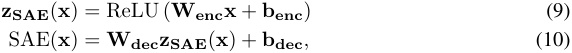
where Wenc ∈ Rd_features×d_model , Wdec ∈ Rd_model×d_features , benc ∈ R_d_features , bdec ∈ R_d_model , d features is the number of feature vectors in the SAE, and d model is the dimensionality of the model activations. Usually, d features is far greater than d model.
Intuitively, Equation 9 transforms the neuron activations x into a sparse vector of SAE feature activations zSAE ( x ). Each feature in an SAE is associated with an “encoder” vector (the i -th row of Wenc ) and a “decoder” vector (the i -th column of Wdec ). Equation 10 then reconstructs the original activations as a linear combination of decoder vectors, weighted by the feature activations.
The basic loss function on which SAEs are trained is
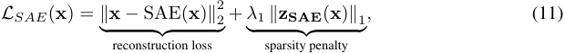
where λ 1 is a hyperparameter and ∥· ∥ 1 denotes the L 1 norm. The first term in the loss is the reconstruction loss associated with the SAE. The second term in the loss is a sparsity penalty , which approximately measures the number of features active on each input (the L 1 norm is used as a differentiable approximation of the L 0 “norm”). SAEs are thus pushed to reconstruct inputs accurately with a sparse number of features, with λ 1 controlling the accuracy-sparsity tradeoff. Empirically, the result of this is that SAEs learn to decompose model activations into highly interpretable features [7].
A standard method for quantitatively evaluating an SAE’s performance is as follows. To measure its sparsity, evaluate the mean number of features active on any given input (the mean L 0). To measure its accuracy, replace the original language model’s activations with the SAE’s reconstructed activations and measure the change in the language model’s loss (in this paper, this is the cross entropy loss for next token prediction).
D Detailed description of circuit analysis
D.1 Notation
xpre(l,t)denotes the hidden state for tokent_at layerl_before the attention sublayer. x(l,t) middenotes the hidden state for token_t_at layer_l_before the MLP sublayer.
When we want to refer to the hidden state of the model for all tokens, we will do by omitting the token index, writing x( prel,1:t) and x( midl,1:t).These are matrices of size Rd_model×n_tokens, where_d_modelis the dimensionality of model activation vectors and n tokens is the number of input tokens.
The MLP sublayer at layer l is denoted by MLP(l) ( · ). Similarly, the transcoder for the layer l MLP is denoted by TC(l) ( · ).
As for attention sublayers: following Elhage et al. [15], each attention sublayer can be decomposed into the sum of n heads independently-acting attention heads. Each attention head depends on the hidden states of all tokens in the input, but also distinguishes the token whose hidden state is to be modified by the attention head. Thus, the output of the layer l attention sublayer for token t is denoted � x( prel,t);x pre(l,1:t) . head hattn(l,h) � �
Each attention head can further be decomposed as a sum over “source” tokens. In particular, the output of layer l attention head h for token t can be written as
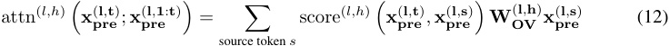
Here, score(l,h) : Rd_model×d_model → R is a scalar “scoring” function that weights the importance of each source token to the destination token. Additionally, WOV(l,h)is a low-rank Rd_model×d_modelmatrix that transforms the hidden state of each source token. score(l,h) is often referred to as the “QK circuit” of attention and WOV(l,h)is often referred to as the “OV circuit” of attention.
D.2 Derivation of Equation 7
We want to understand what causes feature i′ in the transcoder at layer l′ to activate on token t . The activation of this feature is given by
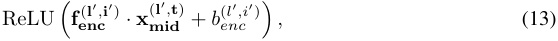
where fenc(l′,i′) is the i′ -th row of Wenc for the layer l′ transcoder and benc(l′,i′) is the learned encoder bias for feature i′ in the layer l′ transcoder. Therefore, if we ignore the constant bias term b( encl′,i′), then, assuming that this feature is active (which allows us to ignore the ReLU), the activation of feature i′ depends solely on fenc(l′,i′) · x( midl′,t).Because of residual connections in the transformer,x( midl′,t)can be decomposed as the sum of the outputs of all previous components in the model. For instance, in a
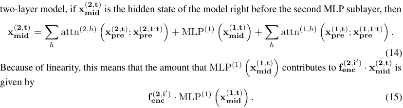
This is generally true for understanding the contribution of MLP l to the activation of feature i′ in transcoder l′ , whenever l < l′ .
Now, if the layer l transcoder is a sufficiently good approximation to the layer l MLP, we can replace the latter with the former: fenc(l′,i′) x( midl,t) ≈ fenc(l′,i′) x( midl,t) . We can further · MLP(l) � � · TC(l) � � decompose this into individual transcoder features: TC(l) � x( midl,t) � =� feature jz T C(l,j)(x( midl,t))f( decl,j). Thus, again taking advantage of linearity, we have
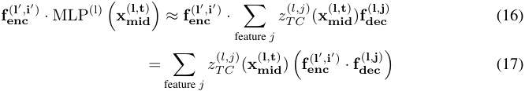
Therefore, the attribution of feature i in transcoder l on token t is given by
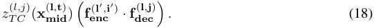
D.3 Attribution through attention heads
So far, we have addressed how to find the attribution of a lower-layer transcoder feature directly on a higher-layer transcoder feature at the same token. But transcoder features can also be mediated by attention heads. We will thus extend the above analysis to account for finding the attribution of transcoder features through the OV circuit of an attention head.
As before, we want to understand what causes feature i′ in the layer l′ transcoder to activate on token t . Given attention head h at layer l with l < l′ , the same arguments as before imply that the contribution of this attention head to feature i′ is given by fenc(l′,i′) x( prel,t);x( prel,1:t) . This · attn(l,h) � � can further be decomposed as
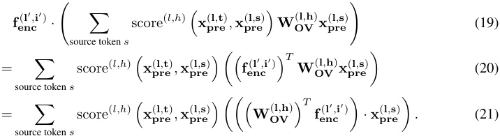
From this, we now have that the contribution of token s at layer l through head h is given by
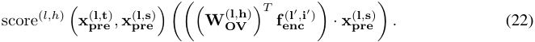
The next step is to note that x( prel,s)can, in turn, be decomposed into the output of MLP sublayers (or alternatively, transcoder features), the output of attention heads, and the original token embedding. These previous-layer components affect the contribution to the original feature through both the QK circuit of attention and the OV circuit. This means that these previous-layer components can have very nonlinear effects on the contribution. We address this by following the standard practice
x( prel,t),x( prel,s) introduced by Elhage et al. [15], which is to treat the QK circuit scores score(l,h) � � as fixed, and only look at the contributions through the OV circuit. While this does prevent us from understanding the extent to which transcoder features contribute to phenomena such as QK composition, nevertheless, the OV circuit alone is extremely informative. After all, if the QK circuit determines which tokens information is taken from, then the OV circuit determines what information is taken from each token—and this can prove immensely valuable in circuit analysis.
Thus, let us continue by treating the QK scores as fixed. Referring back to Equation 22, if y is the output of some previous layer component, which exists in the residual stream x( prel,s), then the contribution of y to the original transcoder feature i′ through the OV circuit of layer l attention head h is given by y · p′ , where
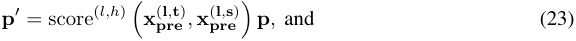
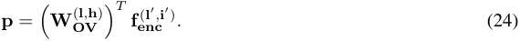
One way to look at this is that p′ is a feature vector . Just like with transcoder features, the extent to which the feature vector p′ is activated by a given vector y is given by the dot product of y and p′ . Treating p′ as a feature vector like this means that we can extend all of the techniques presented in Section 3.2 to analyze p′ . For example, we can take the de-embedding of p′ to determine which tokens in the model’s vocabulary when mediated by the OV circuit of layer l attention head h cause
layer l′ transcoder feature i′ to activate the most. We can also replace the fenc(l′,i′) term in Equation 7 with p′ in order to obtain input-invariant and input-dependent information about which transcoder features when mediated by this OV circuit make the greatest contribution to the activation of layer l′ transcoder feature i′ . In this manner, we have extended our attribution techniques to deal with attention.
D.4 Recursing on a single computational path
At this point, we understand how to obtain the attribution from an earlier-layer transcoder feature/attention head to a later-layer feature vector. The next step is to understand in turn what contributes to these earlier-layer features or heads. Doing so will allow us to iteratively compute attributions along an entire computational graph.
To do this, we will extend the intuition presented in Equation 23 and previously discussed by Dunefsky & Cohan [13], which is to propagate our feature vector backwards through the computational path.4 Starting at the end of the computational path, for each node in the computational path, we compute the attribution of the node towards causing the current feature vector to activate; we then compute a new feature vector, and repeat the process using the preceding node and this new feature vector.
In particular, at every node, we want to compute the new feature vector f such that it satisfies the following property. Let c′ be a node (e.g. a transcoder feature or an attention head), x′ be the vector of input activations to the node c′ (i.e. the residual stream activations before the node c′ ), y′ be the output of c′ , a′ be the attribution of c′ to some later-layer feature, and f′ be the current feature vector to which we are computing the attribution of c′ . Noting that a′ = f′ · y′ , then we want our new feature vector f to satisfy
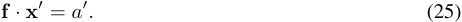
This is because if f satisfies this property, then we can take advantage of the linearity of the residual stream to easily calculate the attribution from an earlier-layer component c to the current node c′ . In particular, if the output of c is the vector y , then this attribution is just given by f · y . Another important consequence of Equation 25 and the linearity of the residual stream is that the total attribution a′ of node c′ is given by
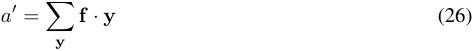
where we sum over all the outputs y of all earlier nodes in the model’s computational graph (including transcoder features and attention heads, but also token embeddings and learned constant bias vectors, which are leaf nodes in the computational graph).
4The similarity to backpropagation is not coincidental, as it can be shown that the method about to be described computes the “input-times-gradient” attribution often used in the explanability literature.
If c′ is attention head h in layer l and we are considering the contribution from the input activations xpre(l,s)at source token positions, then Equation 22 tells us that
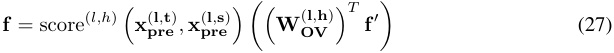
where token position t is the token position corresponding to the later-layer feature f′ . And if c′ is transcoder feature i at layer l , then Equation 18 implies that
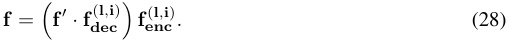
There is one caveat, however, that must be noted. Before every sublayer in the transformer architectures considered in this paper (that is, before every MLP sublayer and attention sublayer), there is a LayerNorm nonlinearity. Neel Nanda [39] provides intuition that LayerNorm nonlinearities can be approximated as a linear transformation that scales its input by a constant; Dunefsky & Cohan [13] provide further theoretical motivation and empirical results suggesting that this is reasonable. We follow this approach in our circuit analysis by multiplying each f feature vector by the appropriate LayerNorm “scaling constant” (which is empirically estimated by taking the ratio of the norm of the pre-LayerNorm activation vector to the post-LayerNorm activation vector).
D.5 Full circuit-finding algorithm
At this point, we are ready to present the full version of our circuit-finding algorithm. The greedy computational-path-finding algorithm is presented as Algorithm 1. This algorithm incorporates the ideas presented in App. D.4 in order to evaluate the attribution of nodes in computational paths; given a set of computational paths of length L , it obtains a set of important computational paths of length L + 1 by computing all possible extensions to the current length- L paths, and then keeping only the N paths with the highest attributions. Note that for the purpose of clarity, the description presented here is less efficient than our actual implementation; it also does not include the LayerNorm scaling constants discussed above.
Next, given a set of computational paths, Algorithm 2 converts this set into a single computational graph. The main idea is to combine all of the paths into a single graph such that the attribution of a node in the graph is the sum of its attributions in all distinct computational paths beginning at that node. Similarly, the attribution of an edge in the graph is the sum of its attributions in all distinct computational paths beginning with that edge. This prevents double-counting of attributions. Assuming zero transcoder error, Equation 26 implies that in a graph produced by Algorithm 2 from the full set of computational paths in the model (including bias terms), the attribution of each node is the sum of the attributions of all of the incoming edges to that node. To account for transcoder error, and to account for the fact that not all computational paths are included in the graph, error nodes can be added to the graph, following the approach of Marks et al. [34].
E Details on Section 4.2 SAE/transcoder training
In this section, we provide details on the hyperparameters used to train the SAEs and transcoders evaluated in Section 4.2.
All SAEs and transcoders were trained with a learning rate of 2 · 10_−_5 using the Adam optimizer. Hyperparameters (learning rate and λ 1 sparsity coefficient) were chosen largely based on trial-anderror.
The loss functions used were the vanilla SAE and transcoder loss functions as specified in Section 3.1 and Appendix C. No neuron resampling methods were used during training.
SAEs were trained on output activations of the MLP layer. Transcoders were trained on the postLayerNorm input activations to the MLP layer and the output activations of the MLP layer. We chose to train SAEs on the output activations because when measuring cross-entropy loss with transcoders, the output activations of the MLP are replaced with the transcoder output; it is thus most valid to compare transcoders to SAEs that replace the MLP output activations as well.
The number of features in the SAEs and transcoders was always 32 × the dimensionality of the model on which they were trained. For GPT2-small, the model dimensionality is 768. For Pythia-410M, the model dimensionality is 1024. For Pythia-1.4B, the model dimensionality is 2048.
Algorithm 1 Greedy computational-path-finding
Input: f′ A feature vector l′ The layer from which f′ came. t The token position associated with feature f′ . a The activation of f′ L The number of iterations to pathfind for N The number of paths to retain after each iteration The input prompt on which we will perform circuit analysis Output: A set of computational paths important for causing f′ to activate Initialize P ←{ [( f′ , l′ , t′ , a′ )] } { P will be our working set of computational paths. Each computational path is a list of feature vectors paired with their attributions. } Initialize Pout ←{} {This will contain our output} Run the model on the input prompt, caching all of its activations. while L > 0 do Initialize Pnext ←{} {This will contain the next iteration of computational paths} for each P ∈P do Set fcur , lcur, tcur, acur to the values in the last element of P Initialize A ←{} {The set of attributions of all lower-layer features} for each transcoder feature i in layer l where l < lcur do Insert fcur · fdec(l,i) fenc(l,i), l, t,z TC(x( midl,t′)) fcur · fdec(l,i) into A �� � � �� end for for each attention head h in layer l at token t where l < lcur and t ≤ tcur do x( prelcur,tcur) , x( prel,t) Compute the attention score S ← score(l,h) � � Compute the feature vector fnew ← S WOV(l,h) fcur �� � T � Compute the attribution anew ← fnew · x( prel,t) Insert ( fnew , l, t, anew ) into A end for Compute the embedding attribution aembed ← fcur · x0 pre,tcur Insert (0 , 0 , tcur, aembed ) into A for each ( fnew , lnew, tnew, anew ) ∈A do if anew is among the top N values of anew contained in A then Append ( fnew , lnew, tnew, anew ) to path P and insert into Pnext end if end for end for Remove all paths in Pnext except for the paths where the attribution of the earliest-layer feature vector in the path is among the top N in Pnext Append all paths in Pnext to Pout P ←Pnext L ← L − 1 end while return Pout
The SAEs and transcoders were trained on 60 million tokens of the OpenWebText dataset. The batch size was 4096 examples per batch. Each example contains a context window of 128 tokens; when evaluating the SAEs and transcoders, we did so on examples of length 128 tokens as well.
The same random seed (42) was used to initialize all SAEs and transcoders during the training process. In particular, this meant that training data was received in the same order by all SAEs and transcoders.
Algorithm 2 Paths-to-graph
Input: P A set of computational paths Output: G = ( V, E ) A computational graph formed from the paths of P . Initialize S ←{} {A set of already-seen computational path prefixes, to prevent us from doublecounting attributions} Initialize V ←{} {A dictionary mapping nodes to their attributions} Initialize E ←{} {A dictionary mapping edges (node pairs) to their attributions} for Each P in P do for i ∈ [1 . . . |P | ] do s ← the prefix of P up to and including the i -th element if s ∈S then Skip this iteration of the loop. end if Insert s into S . if s has length 1 then Let n be the only node in s . Set V [ n ] to the attribution of n . else Set nparent ← P [ i− 1], nchild ← P [ i ] {Earlier-layer nodes come later in the computational paths returned by Algorithm 1} Add the attribution of nchild to V [ nchild ] Add the attribution of nchild to E [( nchild, nparent )] end if end for end for return V, E
F Details on Section 4.1
The transcoder used in the interpretability comparison was the Pythia-410M layer 15 transcoder trained with λ 1 sparsity coefficient 5 . 5 × 10_−5 from Section 4.2. The SAE used in the comparison was a Pythia-410M layer 15 SAE trained on MLP inputs with λ 1 = 7 . 0 × 10−_5 . We used an SAE trained on MLP inputs rather than one trained on MLP outputs (as in § 4.2) because the interpretability comparison involves looking at which examples cause features to activate. This, in turn, is wholly determined by the encoder feature vectors. Because the transcoder’s encoder feature vectors live in the MLP input space, it is thus most valid to compare the transcoder to an SAE whose encoder feature vectors also live in the MLP input space.
This transcoder-SAE pair was chosen because the transcoder and SAE sit at very similar points on the L 0-cross-entropy Pareto frontier: the transcoder has an L 0 of 44.04 and a cross-entropy of 3.35 nats, while the SAE has an L 0 of 47.85 and a cross-entropy of 3.36 nats. Pythia-410M was chosen as the model with the view that its features were likely to be more interesting than those of GPT2-small, while requiring less computational power to determine top activating examples than Pythia-1.4B would. Layer 15 was chosen largely heuristically, because we believed that this layer is late enough in the model to contain complex features, while not so late in the model that features are primarily encapsulating information about which tokens come next.
In Table 1, we refer to “context-free” features that interpretable features that seemed to fire on a single token (or two tokens) regardless of the context in which they appeared. Examples of features in all four categories (“interpretable”, “maybe interpretable”, “uninterpretable”, and “context-free”), along with the exact annotation used by the human rater, can be found in Figure 6.
G Details on Section 5.2
To obtain the de-embedding scores shown in Figures 5 and 4, the following method was used. First, we used the method presented in Appendix D.3 to determine which MLP0 transcoder features had the highest input-invariant connections to the given MLP10 transcoder feature through attention head 1 in
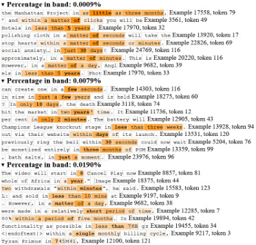
(a) Top-activating examples for a feature annotated as “interpretable”. The specific annotation was local context feature, fires on phrases describing short amounts of time .
(c) Top-activating examples for a feature annotated as “uninterpretable”. The specific annotation was " Whats" > "ADVERTISEMENT Thanks" > "olog" NOT INTERPRETABLE .
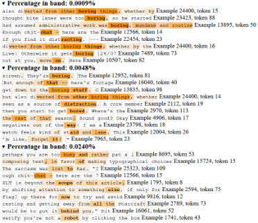
(b) Top-activating examples for a feature annotated as “maybe interpretable”. The specific annotation was local context feature for boredom? MAYBE .
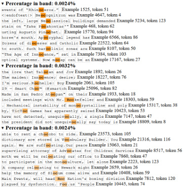
(d) Top-activating examples for a feature annotated as “context-free”. The specific annotation was "oc" in middle of words single-token feature .
Figure 6: Examples of “feature-dashboards” used in the feature interpretation experiments.
layer 9. Specifically, for MLP0 transcoder feature i and MLP10 transcoder feature j , this attribution is given by fdec(0,i) WOV(9,1) fenc(10,j) . For each MLP10 transcoder feature, the top ten MLP0 � � T � � T transcoder features were considered. Then, for each MLP0 transcoder feature, the de-embedding score of each YY token for that MLP0 feature was computed. The total de-embedding score of each YY token for an MLP10 feature was computed as the sum of the de-embedding scores of that token over the top ten MLP0 features, with each de-embedding score weighted by the input-invariant attribution of the MLP0 feature. In Figures 5 and 4, the de-embedding scores were scaled and recentered in order to fit on the graph.
The mean probability difference metric discussed in the original greater-than work is as follows. Given the logits for each YY token, compute the softmax over these logits in order to obtain a probability distribution over the YY tokens; let py denote the probability of the token corresponding to year y . Then, the probability difference for a given prompt containing a certain input year y is given by
� y′ >ypy′−� y′ ≤ypy′.The mean probability difference is the mean of the probability differences over all 100 prompts.
H Full case studies
H.1 Classic blind case studies
H.1.1 Citation feature: tc8[355]
First, we checked activations for the first 12,800 prompts in the training data. Using this, we identified the prompt indexed at (5701 , 37) as one of 11 prompts for which tc8[355] activated above a score of 11.
Path-based analysis on input index (5701 , 37) revealed contributions from various tokens, notably attn7[7]@35 and attn5[6]@36 . However, we first decided to focus on the current token.
Current-token features. Top de-embeddings for both tc0[9188] and tc0[16632] were all variants of a semicolon: ; , ’; , %; , and .; . We also checked tc6[11831]@-1 and found that its top contributing features from layer 0 were tc0[16632] and tc0[9188] : the same two semicolon features. On the basis of this, we concluded that the final token is a semicolon .
Surname features. Next we focused on attn7[7]@35 . Some interpretable features with high attributions through this component included tc0[13196]@36 (years), tc0[10109]@31 (open parentheses), mlp8tc[355]attn7[7]attn0[1]@35 (components of last names), tc0[12584]@32 : P , and tc0[7659]@34 : ck .
Input-independent investigation of tc6[21046]@35 revealed high contributions from tc0[16382] and tc0[5468] . feat016382 corresponded to tokens such as oglu , owski , and zyk ; tc0[5468] corresponded to tokens such as Burnett , Hawkins , and MacDonald . Observing that all of these are (components of) surnames, we decided that token 35 was likely (part of) a surname .
Repeating analysis with prompt (6063 , 47) . Top attributions for this prompt once again identified tc0[9188] , the semicolon feature from earlier. We filtered our computational paths to exclude this transcoder feature, since we already had a hypothesis about what it was doing. This identified tc0[10109]@39 and tc0[21019]@46 as top-contributing features.
The top de-embedding tokens for tc0[10109]@39 were ( , (= , and ( ˜ . On the basis of this, we determined that token 39 was likely an open parenthesis . Meanwhile, the top de-embedding tokens for tc0[21019]@46 were 1983 , 1982 , and 1981 . This caused us to conclude that token 46 was likely a year .
We noted that, in the previous prompt, the attribution for the year features went through attn5[6] , whereas on this prompt it went through attn2[9] . We decided to investigate the behavior of attn5[6] on this prompt, and found that it was attributing to features tc0[16542]@11 , tc0[4205]@11 , and tc0[19728]@11 . The de-embedding results for these were mixed: tc0[16542] were both close-parenthesis features, whereas tc0[4205] included citationrelated tokens like Accessed , Neuroscience , and Springer .
Final result. We decided that tc8[355] was likely a semicolon-in-citations feature and looked at activating prompts. Top-activating prompts included “Res. 15, 241–247; 1978). In their paper, ”, “aythamah , 2382; Tahdh¯ıb al-”, and “lesions (Poeck, 1969; Rinn, 1984). It”. Note that the last of these was prompt (5701 , 37), i.e. the first case study we considered.
In general, the top-activating features corroborated our hypothesis, and we did not find any unrelated prompts. We noticed that many of the top activating prompts had a comma before the year in citations, but our circuit analysis never identified a comma feature.
We compared transcoder activations on the prompts “(Leisman, 1976;” and “(Leisman 1976;” and found tc8[355] to activate almost identically for both when all preceding MLPs were replaced by transcoders (4.855 and 4.906, respectively) and on the original model (12.484 and 12.13, respectively).
H.1.2 “Caught” feature: tc8[235] .
First, we checked activations for the first 12,800 prompts in the training data. Using this, we identified prompt (8531, 111) as one of 13 prompts for which tc8[235] activated above a score of 11.
Input (8531 , 111) . Path analysis revealed that this feature almost exclusively depends on the final token in the input. Input-independent connections to the top-contributing transcoder feature, tc7[14382] , revealed the layer-0 transcoder features tc0[1636] (de-embeddings: caught , aught ) tc0[5637] (de-embeddings: captured , caught ) , tc0[3981] ( catch , catch ) as top contributors.
Inputs (6299 , 39) and (817 , 63) . For input (6299 , 39), we again saw top computational paths depended mostly on the final token. This time, we identified tc7[14382] and tc0[1636] —both of which were already identified for the previous prompt—as top contributors. For input (6299 , 39) we also observed the same pattern. This caused us to hypothesize that this feature fires on past-tense synonyms of “to catch.”
Final result. Top activating prompts for this feature were all forms of “caught,” but the various synonyms, such as “uncovered,” were nowhere to be found.
“Caught” as participle. Additionally, we noticed that “caught” was used as a participle rather than a finite verb in all top-activating examples. To explore this, we investigated the difference in activations between the prompts “He was caught” and “He caught the ball”, and found that the former caused tc8[235] to activate strongly (19.97) whereas the latter activated very weakly (0.8145).
When we tested the same prompts while replacing all preceding MLPs with transcoders, we found the difference much less stark: 16.45 for “He was caught” and 9.00 for “He caught the ball”. This suggests that transcoders were not accurately modeling this particular nuance of the feature behavior.
Finally, we checked top paths for contributions through the was token on the prompt “He was caught” to see whether we could find anything related to this nuance in our circuits. This analysis revealed attn1[0]@2 as important, and were able to discover mild attributions to transcoder features whose top de-embeddings were was and related tokens.
H.2 Restricted blind case studies
Beyond a simple blind case study, we carried out a number of “restricted blind case studies.” In these, all of the rules of a regular blind case study apply, and additionally it is prohibited to look at input-dependent information about layer-0 transcoder features.
Since layer 0 features are more commonly single-token features, and in general there is almost no contextual information available for the MLP yet, layer 0 features tend to be substantially more informative about the tokens in the prompt than features in other layers are. Thus, it is often possible to reconstruct large portions of the prompt just from the de-embeddings of which layer 0 transcoder features are active—and, although we never look at these activations directly, they are frequently revealed and analyzed as part of active computational graphs leading to some downstream feature.
By omitting input-dependent information about layer 0 features from our analysis, we must rely more on circuit-level information, and remain substantially more ignorant of the prompts for activating examples. Note that input-independent information about layer 0 features can still be used: for instance, we can look at top input-independent connections to layer 0 features, and the de-embeddings for those as well—at the expense of not knowing whether those features are active or not.
H.2.1 Local context feature: tc8[479] .
Our first example of a blind case study follows tc8[479] , which we fail to correctly annotate through circuit analysis. We include this case study for transparency, and as an instructive example of how things can go awry during blind case studies. First, we measured feature activations over 12,800 prompts and identified 6 prompts that activated above a threshold of 10.
Input (3511 , 64) . For this prompt, path analysis revealed a lot of attention head involvement from many previous tokens. For our first analysis, we chose the path mlp8tc[479]@-1 <- attn8[5]@62: 8.1 <- mlp7tc[10719]@62 , since we could look at de-embeddings for tc7[10719]@62 . Top input-independent connections from tc7[10719]@62 to layer 0 were tc0[22324] and tc0[2523] , which had estimated and estimate as their top de-embeddings, respectively. Thus, we hypothesized that token 62 is “estimate(d)” .
Next, we looked at the pullback of tc8[479] through attn8[5] through attn7[5]@57 . This revealed top input-independnet connections to tc0[23855] (top de-embedding tokens: spree , havoc , frenzy ), tc0[8917] (took de-embedding tokens: amounts , quantities , amount ) , and tc0[327] ( massive , massive , huge ) . We found this aspect of the analysis to be inconclusive.
The pullback of tc8[479] through attn8[5] through attn6[11]@57 revealed connections to tc0[13184] ( total ) , tc0[12266] ( comparable ) , and tc0[12610] ( averaging ) . This led us to believe that token 57 relates to quantities .
We found that tc3[18655] was a top transcoder feature active on the current token. This showed top input-independent connections to tc0[11334] and tc0[5270] , both of which de-embedded as be . This led us to hypothesize that tc8[479] features on phrases like “the amount/total/average is estimated to be...”.
Input (668 , 122) . For this prompt, most contributions once again came from previous tokens. The top contributor was attn8[5]@121 , which had input-independet connections to tc0[12151] ( airport ) , tc0[8192] ( pired ) , tc0[13184] ( total ) , and tc0[1300] ( resulted ). This was inconclusive, but this is the second time that tc0[13184] has appeared in de-embeddings.
Next, we investigated attn8[7]@121 : it connected to tc0[16933] ( population ), tc0[14006] ( kinson , rahim , LU , . . . ), tc0[19887] ( blacks ), and tc0[6821] ( crowds ). These seemed related to groups of people, but this analysis was also inconclusive.
When we investigated tc4[18899]@121 , top input-idependent connections to layer-0 features included tc0[22324] , which de-embedded to estimated again. This was more consistent with the behavior on the previous prompt.
To understand the current-token behavior, we looked at tc7[13166]@-1 . Top input-indendent connections were tc0[18204] ( discrepancy ) and tc0[14717] ( velocity ). tc1[19616]@-1 and tc3[22544] -1, both of which also contributed, each had top connections to tc0[19815] ( length ) . This led us to guess that this prompt relates to estimated length .
Next, we looked at previous tokens. One feature, tc5[10350]@119 , was connected to tc0[23607] and tc0[4252] , both of which de-embedded to variants of With . For the next token, tc6[15690]@120 was connected to tc0[22463] and tc0[18052] (both a ). This updated our hypothesis to something like “with an estimated length.”
Further back in the prompt, we saw tc4[23257]@29 (connected to tc0[12475] : remaining , tc0[16996] : entirety ) .
Input (7589 , 89) . One feature, tc7[6]@87 , pulled back to tc0[22324] , which de-embedded to estimated . A following-token feature, tc1[14473] , pulled back to tc0[4746] ( annual , yearly ) , and the next-token feature tc1[12852]@89 , pulled back to tc0[923] ( revenue ). Thus, this prompt seemed to end in “estimated yearly revenue.”
Estimates for earlier tokens included tc4[23699]@85 ( tc0[10924] : with ) , tc5[6568]@86 ( tc0[1595] : a ). This matched the pattern from earlier, where we expected a prompt like “with an estimated length”—but now we expect “with an estimated annual revenue.”
Looking at the pulled-back feature mlp8tc[479]attn3[2]@86 , none of the connections we found to be very informative. This is consistent with patterns observed in other case studies, where pullbacks through attention tended to be harder to interpret.
Final guess. On the basis of the above examples, we guessed that this feature fires on prompts like “with a total estimated...”. When we viewed top activating examples, we found a number of examples that matched this pattern, especially among the highest total activations. However, for many of the lowest-activation prompts we saw quite different behaviors. Activating prompts revealed that
this is a local context feature , which in retrospect may have been apparent through the very high levels of attention head involvement in all circuits we analyzed.
H.2.2 Single-token All feature: tc8[1447]
An analysis of the first 12,800 prompts revealed 21 features activating above a threshold of 11. One of these was input (3067 , 79). The computational paths for this prompt revealed all contributions came from the final token.
The top attribution was due to tc7[10932] , with a top input-independent connection to tc0[4012] , which de-embedded to All . The next-highest was tc6[8713] , which connected to tc0[6533] , which de-embedded to All (note the leading space). These observations led us to hypothesize this is probably a simple, single-token feature for “All.”
We also looked at context-based contributions by filtering out current-token features, and found the top attributions to max out at 0.23 (compared to 3.5 from tc7[10932]@79 ). This was quite low, indicating context was probably not very important. Nevertheless, we explored the pullback of tc8[1447] through the OV circuit of attn4[11]@78 and discovered several seemingly-unrelated connections with low attributions. When we pulled back through the OV circuit of attn1[1]@78 and attn2[0]@78 , both showed input-independnt connections to features that de-embedded as punctuation tokens. Overall, the context seemed to contribute little, except to suggest that there may be punctuation preceding this instance of All .
We repeated this analysis with another input, (8053 , 72), and found the same features contributing: tc7[10932] , followed by tc6[8713] . This led us to conclude this is a single-token “All” feature. Top activating examples confirmed this: the feature activated most highly for All , then All , and finally all . Overall, this feature turned out to be quite straightforward, and it was easy to understand its function purely from transcoder circuits.
H.2.3 Interview feature: tc8[6569]
For this feature, we found 15 out of 12,800 prompts to activate above a threshold of 16.
Input (755 , 122) . We started by exploring input (755 , 122), which revealed several contributions from other tokens.
We began by looking at components that contributed to the final token. The top feature was tc7[17738] , which connected to tc0[15432] (variants of interview ) , tc0[12425] (variants of interviewed ) , and tc0[12209] (tokens like Transcript , Interview , and rawdownloadcloneembedreportprint ) . The next feature, tc3[11401] , was connected to tc0[15432] and tc0[12425] (same as the previous), as well as tc0[21414] , which de-embedded to variants of spoke . This raised the possibility that “interview” is being used as a verb in this part of the prompt.
Next, we turned our attention to previous tokens in the context, in hopes that this would clarify the sense in which “interview” was being used. The top attribution for the previous token (121) was through attn4[11] . The de-embeddings for top input-independent features were uninformative: tc0[22216] seemed to cover variants of gest ) , while tc0[7791] covered variants of sector . For token 120, pullbacks through attn2[2] showed connections to tc0[10564] and tc0[9519] , both of which de-embedded to variants of In . This led us to believe “interview” was in fact being used as a noun, e.g. “in an interview...”
The top attribution for token 119 came through attn4[9] , and showed connections to:
-
tc0[625]:allegations,accusations,allegation, ..., -
tc0[10661]:allegedly,purportedly,supposedly, ..., and -
tc0[22588]:reportedly,rumored,stockp, ....
The next-highest attribution came through attn8[5] , and showed connections to:
-
tc0[4771]:Casey,Chase,depot, ..., and -
tc0[5436]:didn,didn,wasn.. .
The next-highest was tc2[5264]@119 , which showed connections to:
-
tc0[5870]:unlocks,upstairs,downstairs, ..., -
tc0[14674]:saidand variants, and -
tc0[12915]:saidand variants
This led us to believe that this feature fires on “said in an interview”-type prompts .
Input (1777 , 53) . Next we tried another prompt, (1777 , 53). The top features for the current token were identical to the previous example: tc7[17738] , tc3[11401] , tc6[24442] , and so on.
For the context, we first looked at the pullback of our feature through the OV circuit of attn2[2]@51 . This showed input-independent connections to tc0[10564] , which once again de-embedded to In . Next up, attn4[9]@50 . This feature connected to tc0[625] , tc0[10661] , and tc0[22588] , exactly like before. Recall that these features de-embed to “said” and “allegedly”-type tokens.
Finally, we saw a high attribution from a much earlier token via attn8[9]@16 . The pullback of our feature through this head showed high input-independent connections to tc0[14048] , whose de-embeddings were all variants of election .
Input (10179 , 90) . For our last input, we once again found the same transcoder features contributing through the current token. For earlier tokens, we tried:
-
attn2[2]@88, findingtc0[10564](In) again; -
attn8[9]@86, findingtc0[16885], which also de-embedded toelectionsdespite being a new feature; -
attn6[20291]@86, findingtc0[372](told) ; and -
tc6[20291]@86, findingtc0[372]again.
Final guess. In sum, we decided this feature fires for prompts conveying “told/said in an interview.” Top activating examples corroborated this, without any notable deviations from this pattern.
H.2.4 Four more restricted blind case studies
We present the results of four more restricted blind case studies in Table 3. In the interest of conserving space, only the results of these case studies are presented. However, in the supplemental material attached to this submission, the original Jupyter Notebooks in which the case studies were carried out are provided.
Table 3: The results of four more restricted blind case studies.
| Feature | Final hypothesis | Actual interpretation | Outcome |
|---|---|---|---|
tc8[9030] |
Fires onbiologywhen inthe context of being a subject of study |
Fires on scientific subjects of study like chemistry,psychology,biology,economics |
Failure |
tc8[4911]tc8[6414] |
Fires on thoughor althoughin the beginningof a clause Largely uninterpretable fea- ture that sometimes fires on Cyrillic text |
Fires on thoughor althoughin the beginningof a clause Largely uninterpretable fea- ture that sometimes fires on Cyrillic text |
Success Success |
tc8[2725] |
Fires on phrases about not of- fering things or not providing things. (As a stretch: particu- larlyin legalese context?) |
Fires on phrases about not of- fering things or not providing things, in general |
Mostly a success |
Table 4: The results of all blind case studies.
| Feature | Type | Final hypothesis | Actual interpretation | Outcome |
|---|---|---|---|---|
tc8[355] |
Blind | Fires on semicolons in the context of academic citations |
Fires on semicolons in the context of academic citations |
Success |
tc8[1447] |
Restricted Blind | Single-token “All” feature | Single-token “All” feature | Success |
tc8[6569] |
Restricted Blind | Fires on prompts conveying “told/said in an interview” |
Fires on prompts conveying “told/said in an interview” |
Success |
tc8[4911] |
Restricted Blind | Fires on thoughor althoughin the beginningof a clause |
Fires on thoughor althoughin the beginningof a clause |
Success |
tc8[6414] |
Restricted Blind | Largely uninterpretable fea- ture that sometimes fires on Cyrillic text |
Largely uninterpretable fea- ture that sometimes fires on Cyrillic text |
Success |
tc8[235] |
Blind | Fires on past-tense syn- onyms of “to catch” |
Fires on forms of “caught” | Mostly a success |
tc8[2725] |
Restricted Blind | Fires on phrases about not of- fering things or not providing things. (As a stretch: particu- larly in legalese context?) |
Fires on phrases about not of- fering things or not providing things, in general |
Mostly a success |
tc8[479] |
Restricted Blind | Fires on prompts resembling “with a total estimated...” |
A local context feature | Failure |
tc8[9030] |
Restricted Blind | Fires onbiologywhen inthe context of being a subject of study |
Fires on scientific subjects of study like chemistry,psychology,biology,economics |
Failure |